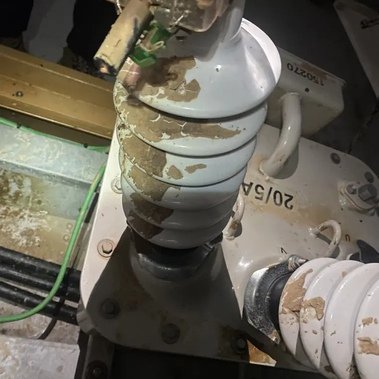
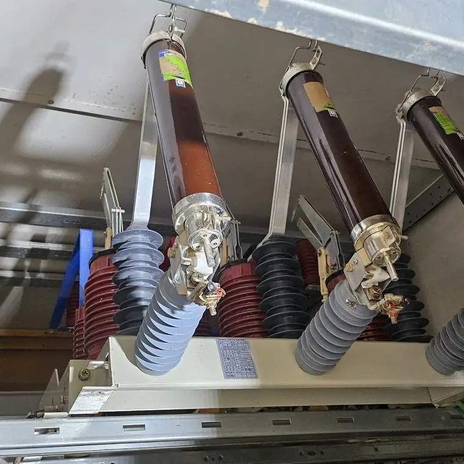

전기실 청소 업체는 어떻게 고르나요?
최종 수정 2026-11-09
세척제의 시험·인증 자료, 안전 절차와 장비, 유사 설비 시공 경험, 전후 기록 제공 여부를 확인하세요. 가격만 비교하기보다 설비 조건을 확인하고 범위를 명확히 설명하는 업체인지 보는 것이 좋습니다.
확인 항목
- 세척제의 절연성능 등 시험 자료
- 오염 방지와 안전 절차
- 유사 설비 시공 경험
- 전후 사진 등 기록 제공
- 작업 범위와 일정의 명확한 설명
작업 전

작업 후

주의
전기설비를 직접 물이나 일반 세제로 청소하는 것은 감전·단락 위험이 있어 권하지 않습니다. 반드시 전문 업체와 전기안전관리자에게 먼저 확인하세요.
자주 묻는 질문
자료는 어떻게 요청하나요?
시험 성적서나 인증 자료를 업체에 요청하세요.
무조건 저렴한 곳이 좋은가요?
범위와 방식을 비교해야 합니다.
설비 사진과 정보를 남기시면 확인 후 견적을 안내해 드립니다.
무료 견적 문의하기이 글은 시공 업체가 공개한 자료와 일반적인 전기설비 관리 상식을 바탕으로 작성했습니다. 설비별 적용 여부와 결과는 현장 확인 후 달라질 수 있습니다.